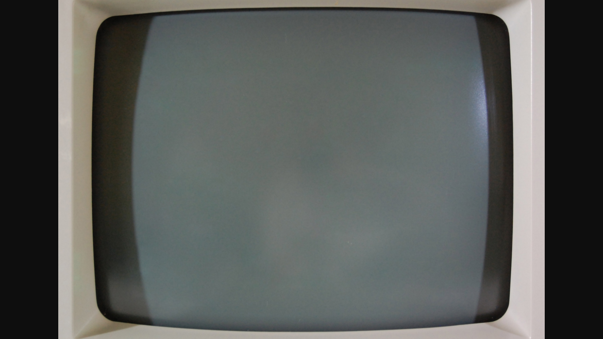

Apple II System Utilities Main Menu
Version 3.1 ESC: Quit
―――――――――――――――――――――――――――――――――――――――――――――――――――――――――――――――――――――――――――――――
Work on Entire Disks Work on Individual Files
Catalog a Disk Copy Files
List Volumes Delete Files
Duplicate a Disk Rename Files
Format a Disk Lock/Unlock Files
Verify a Disk
Work on ProDOS Disks Only Other Options
Create Subdirectory Set Serial Ports
Set Prefix About the System Utilities
Rename Volumes Quit
Press ↓ ↑ ← → to select an option.
Then press RETURN.
―――――――――――――――――――――――――――――――――――――――――――――――――――――――――――――――――――――――――――――――
For Help: Press ?
